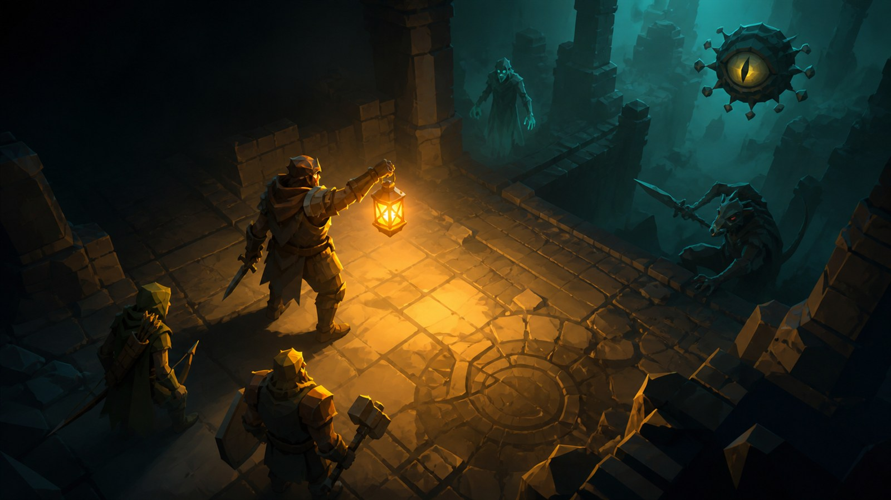
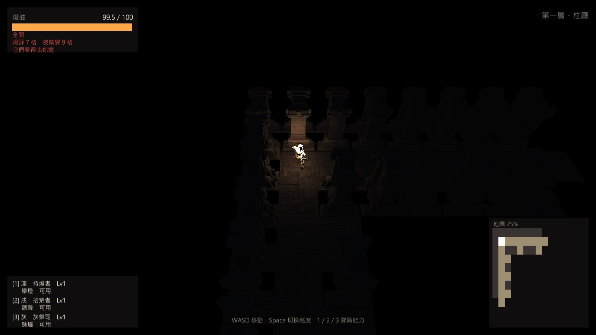
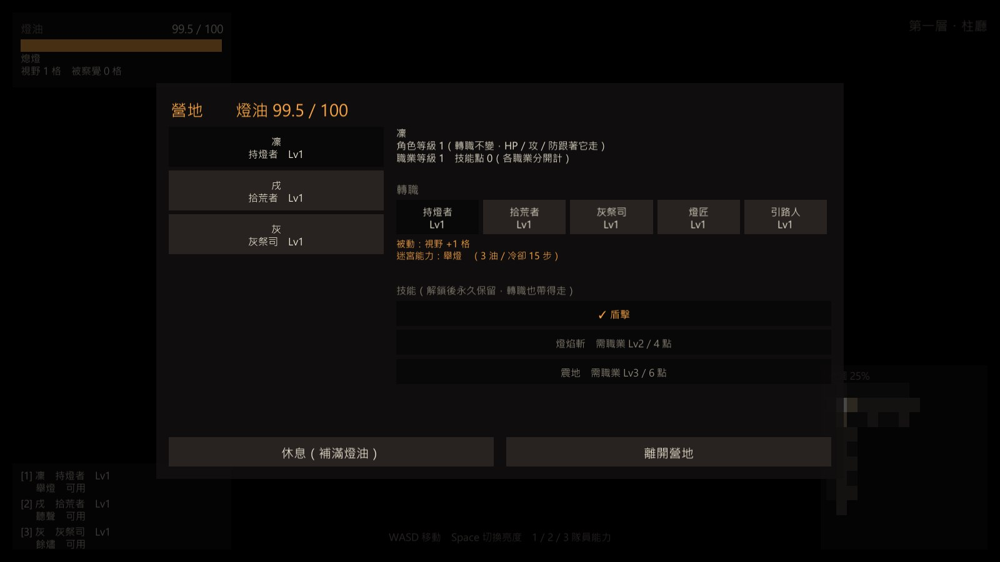
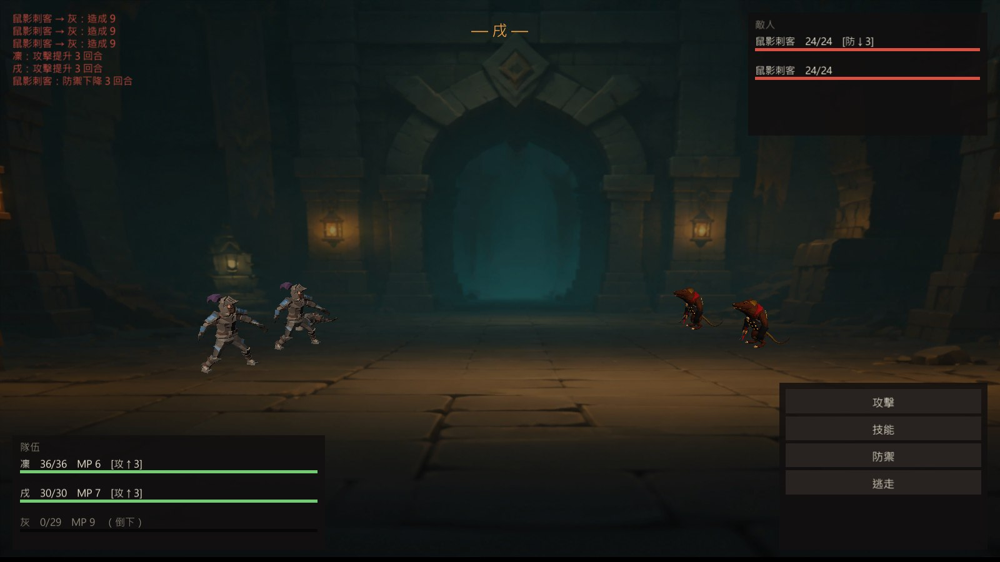
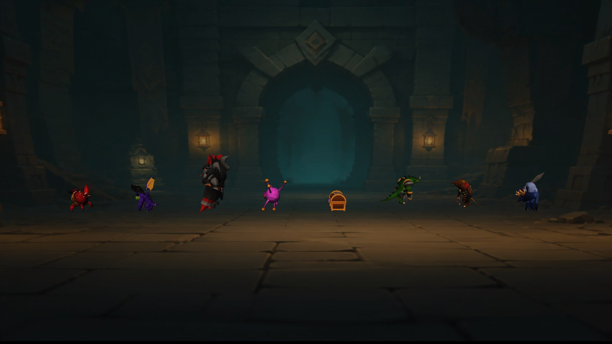

步進探索
以 WASD 或方向鍵逐格前進；視野會在敵人移動前重算，讓玩家能依這一步的資訊判斷繞路或接戰。

四段亮度直接改變可見範圍、燈油消耗與敵人察覺距離。點得越亮，地圖資訊越完整，也越容易讓巡邏怪先發現隊伍。熄燈能避開危險，代價是幾乎失去導航資訊。
以 WASD 或方向鍵逐格前進；視野會在敵人移動前重算，讓玩家能依這一步的資訊判斷繞路或接戰。
敵人直接存在於地圖上，會巡邏、察覺、追擊。誰先看見誰，會決定側視回合戰的先手權。
十種職業都與燈油軸互動：看得更遠、降低耗油、摸黑聽聲，或用高風險強光換取時機。
切換下方按鈕比較全開燈與熄燈。全開能讀出路線，但被察覺半徑高於視野；熄燈時只剩腳邊一格，卻能讓隊伍從威脅旁邊安靜通過。

全開燈 · 視野 7 格／被察覺 9 格以下皆為遊戲實機畫面。營地可轉職、休息與存檔；戰鬥支援狀態效果；八種怪物均已完成比例、朝向與材質驗證，並已移植為可直接開啟的 WebGL 試玩版。



公開頁只陳述已由自動測試、Windows Player 與人工畫面檢查支持的結果；不把代理巡場冒充真人遊玩感受。